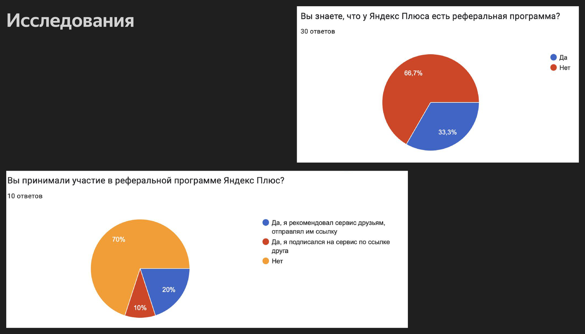
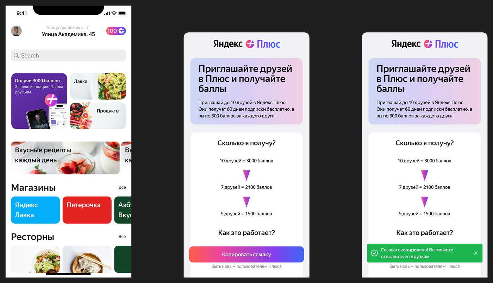

Редизайн лендинга и экранов реферальной программы — механики, с помощью которой пользователи приглашают друзей в Плюс и получают за это баллы.
Редизайн лендинга реферальной программы Яндекс Плюса: нужно было повлиять на то, как пользователь взаимодействует с программой — от момента, когда узнаёт о ней, до приглашения друга. Глобальная цель команды Плюса — рост ARPU (среднего дохода на пользователя), и заметная, понятная реферальная программа была одним из рычагов для этого.
Начала с опроса среди пользователей 22–35 лет, которые любят пользоваться бонусами и кэшбэками. Результаты оказались показательными: 66,7% опрошенных (30 ответов) не знали, что у Яндекс Плюса вообще есть реферальная программа, а среди тех, кто знал (10 ответов), 70% никогда ей не пользовались.

Собрала CJM и портрет пользователя, чтобы проследить путь от идеи поделиться подпиской с другом до реального действия. Это выявило два барьера: пользователи не понимают, где искать программу в интерфейсе, а вознаграждение в «300 баллов» не выглядит достаточно мотивирующим, чтобы отправить другу ссылку.
Сформулировала несколько гипотез — модальное окно-онбординг, отдельный блок на главном экране, изменение расположения кнопки, визуальный акцент на карте такси — и выбрала приоритетную: изменить формулировку условий программы. Вместо «300 баллов за друга» — прозрачная шкала «10 друзей = 3000 баллов, 7 друзей = 2100 баллов, 5 друзей = 1500 баллов», при той же выгоде для пользователя, но более мотивирующей подаче.
Спроектировала обновлённый User Flow — от главного экрана через баннер Плюса к экрану с условиями и копированием ссылки — и протестировала прототип на респондентах. Тестирование подтвердило часть гипотезы: упоминание «3000 баллов» действительно повышало мотивацию пригласить друзей, но также показало новый барьер — пользователям было не сразу понятно, из чего складывается шкала вознаграждения, и возникал вопрос, где искать этих десятерых друзей.

Собрала обновлённый экран реферальной программы с прозрачной шкалой вознаграждения вместо одной неочевидной цифры в 300 баллов, а также итоговый флоу приглашения друга — от кнопки на главном экране Плюса до копирования ссылки. Результаты тестирования и открытый вопрос о том, где пользователю искать друзей для приглашения, стали материалом для следующей итерации гипотез.